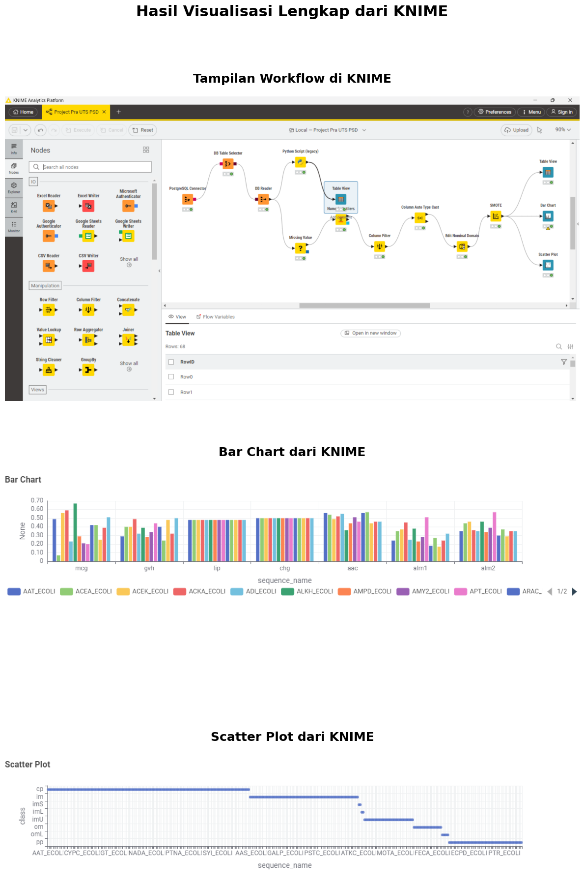
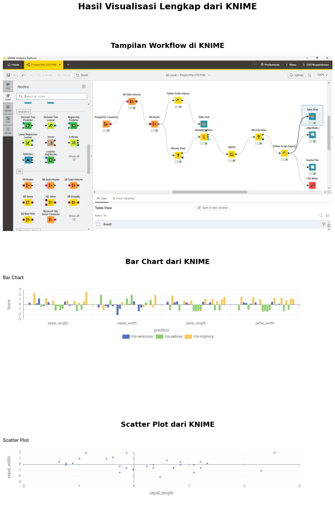

KNIME#
Data Ecoli#
import pandas as pd
import matplotlib.pyplot as plt
import matplotlib.image as mpimg
from IPython.display import display, HTML
df = pd.read_csv("Data/ecoli.csv")
df.head()
| sequence_name | mcg | gvh | lip | chg | aac | alm1 | alm2 | class | |
|---|---|---|---|---|---|---|---|---|---|
| 0 | AAT_ECOLI | 0.49 | 0.29 | 0.48 | 0.5 | 0.56 | 0.24 | 0.35 | cp |
| 1 | ACEA_ECOLI | 0.07 | 0.40 | 0.48 | 0.5 | 0.54 | 0.35 | 0.44 | cp |
| 2 | ACEK_ECOLI | 0.56 | 0.40 | 0.48 | 0.5 | 0.49 | 0.37 | 0.46 | cp |
| 3 | ACKA_ECOLI | 0.59 | 0.49 | 0.48 | 0.5 | 0.52 | 0.45 | 0.36 | cp |
| 4 | ADI_ECOLI | 0.23 | 0.32 | 0.48 | 0.5 | 0.55 | 0.25 | 0.35 | cp |
import matplotlib.pyplot as plt
import matplotlib.image as mpimg
# === 1️⃣ Baca tiga gambar dari folder Data ===
img1 = mpimg.imread("Data/KNIME-ecoli.png") # Gambar utama di atas
img2 = mpimg.imread("Data/Bar-Chart-KNIME.png") # Gambar tengah
img3 = mpimg.imread("Data/Scatter-Plot-KNIME.png") # Gambar bawah
# === 2️⃣ Buat figure besar dan jelas ===
plt.figure(figsize=(12, 20)) # bisa ubah ke (14, 24) kalau mau lebih besar
# === 3️⃣ Gambar 1: KNIME.png (atas) ===
plt.subplot(3, 1, 1)
plt.imshow(img1)
plt.axis("off")
plt.title("Tampilan Workflow di KNIME", fontsize=18, fontweight="bold", pad=20)
# === 4️⃣ Gambar 2: Bar Chart (tengah) ===
plt.subplot(3, 1, 2)
plt.imshow(img2)
plt.axis("off")
plt.title("Bar Chart dari KNIME", fontsize=18, fontweight="bold", pad=20)
# === 5️⃣ Gambar 3: Scatter Plot (bawah) ===
plt.subplot(3, 1, 3)
plt.imshow(img3)
plt.axis("off")
plt.title("Scatter Plot dari KNIME", fontsize=18, fontweight="bold", pad=20)
# === 6️⃣ Judul besar di atas semua gambar ===
plt.suptitle("Hasil Visualisasi Lengkap dari KNIME", fontsize=22, fontweight="bold", y=0.995)
# === 7️⃣ Tata letak agar proporsional ===
plt.tight_layout(rect=[0, 0, 1, 0.96])
plt.show()

Data Iris#
df = pd.read_csv("Data/KNIME-iris.csv")
df.head()
| sepal_length | sepal_width | petal_length | petal_width | prediksi | |
|---|---|---|---|---|---|
| 0 | 0.354517 | -0.604140 | 0.557645 | 0.023324 | Iris-versicolor |
| 1 | -0.133071 | 1.953251 | -1.162597 | -1.176203 | Iris-setosa |
| 2 | 2.304867 | -1.115618 | 1.819157 | 1.489413 | Iris-virginica |
| 3 | 0.232620 | -0.348401 | 0.442962 | 0.423166 | Iris-versicolor |
| 4 | 1.207795 | -0.604140 | 0.614987 | 0.289886 | Iris-versicolor |
import matplotlib.pyplot as plt
import matplotlib.image as mpimg
# === 1️⃣ Baca tiga gambar dari folder Data ===
img1 = mpimg.imread("Data/KNIME-iris.png") # Gambar utama di atas
img2 = mpimg.imread("Data/Bar_Chart_KNIME.png") # Gambar tengah
img3 = mpimg.imread("Data/Scatter_Plot_KNIME.png") # Gambar bawah
# === 2️⃣ Buat figure besar dan jelas ===
plt.figure(figsize=(12, 20)) # bisa ubah ke (14, 24) kalau mau lebih besar
# === 3️⃣ Gambar 1: KNIME.png (atas) ===
plt.subplot(3, 1, 1)
plt.imshow(img1)
plt.axis("off")
plt.title("Tampilan Workflow di KNIME", fontsize=18, fontweight="bold", pad=20)
# === 4️⃣ Gambar 2: Bar Chart (tengah) ===
plt.subplot(3, 1, 2)
plt.imshow(img2)
plt.axis("off")
plt.title("Bar Chart dari KNIME", fontsize=18, fontweight="bold", pad=20)
# === 5️⃣ Gambar 3: Scatter Plot (bawah) ===
plt.subplot(3, 1, 3)
plt.imshow(img3)
plt.axis("off")
plt.title("Scatter Plot dari KNIME", fontsize=18, fontweight="bold", pad=20)
# === 6️⃣ Judul besar di atas semua gambar ===
plt.suptitle("Hasil Visualisasi Lengkap dari KNIME", fontsize=22, fontweight="bold", y=0.995)
# === 7️⃣ Tata letak agar proporsional ===
plt.tight_layout(rect=[0, 0, 1, 0.96])
plt.show()
